روزی روزگاری در حاشیهٔ شهری، دخترکی به نام اِدا زندگی میکرد. خانوادهاش آنقدر فقیر بودند که تمام پساندازشان در یک قوطی بیسکویت جا میشد. آنها پول کافی برای زندگی در خانهای معمولی نداشتند. به جای آن، اِدا با مادرش و برادر کوچکش آلن در کلبهای نزدیک یک قراضهفروشی زندگی میکرد.
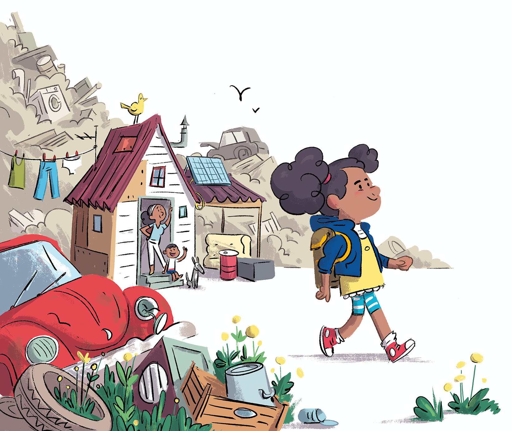
در نقطهای دورتر، در سوی دیگر شهر، مخترع مشهوری به نام زنگِمن زندگی میکرد. او فوقالعاده ثروتمند بود. هیچ ورق کاغذی در دنیا به اندازهای بزرگ نبود که بتواند موجودی حساب بانکیاش را با همهٔ عددها و صفرهایش نشان دهد! او در خانهای عظیم با استخر و سرسرهٔ آبی، پلهها و برجهای زیاد، صدها پنجره و اتاقهایی آنقدر زیاد زندگی میکرد که گاهی خودش هم توی آنها گم میشد. عمارت زنگِمن بالای تپهای بلند قرار داشت. از آنجا میتوانست تمام شهر را ببیند.
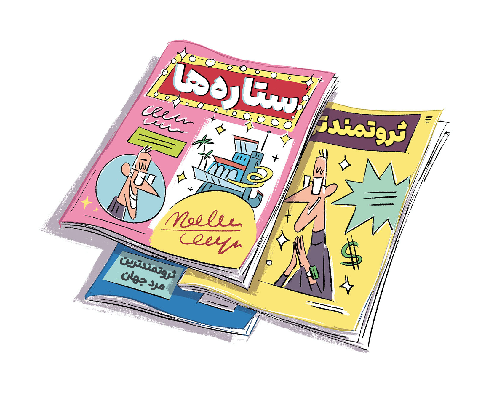
زنگِمن از کودکی مجذوب کامپیوترها بود. وقتی او کوچک بود، کامپیوترها ماشینهای عظیمی با کابلهای زیاد و پنکههای پر سر و صدا بودند. در مدرسه، زنگِمن کوچک اغلب در رؤیای کارهایی بود که میتوانست با کامپیوترها انجام دهد، اگر فقط کمی کوچکتر میشدند؛ آنقدر کوچک که بتواند آنها را داخل چیزهای سرگرمکنندهٔ دیگر بگذارد.
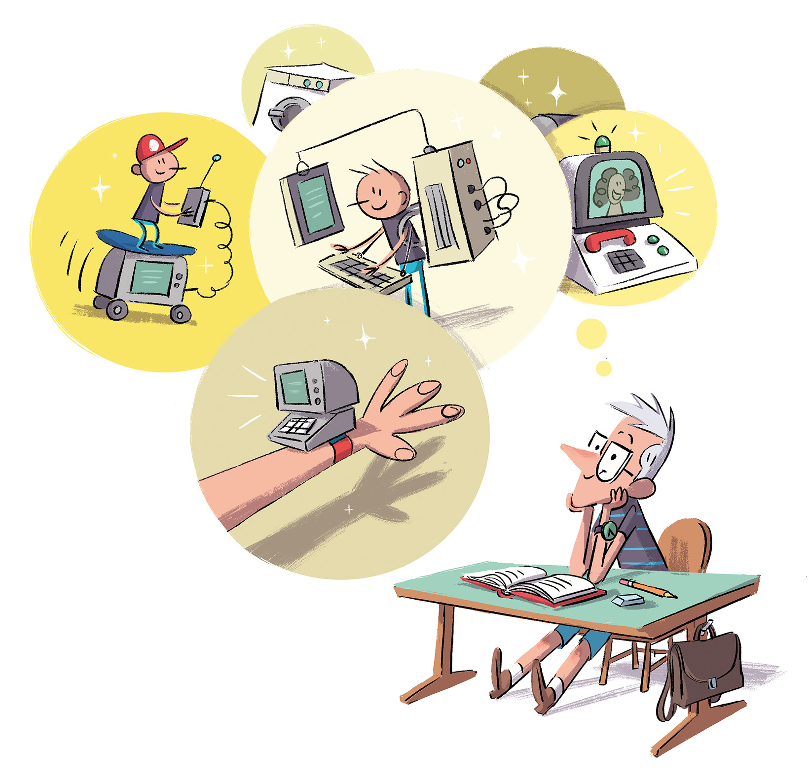
اول از همه، کامپیوتری داخل اسکیتبوردش میساخت تا وقتی سوار آن میشود صداهای جالبی دربیاورد؛ مثلاً صدای آژیر ماشین آتشنشانی یا صدای پرتاب موشک. بعد هم دستگاههای بستنیسازی اختراع میکرد! کامپیوتر میتوانست مزههای هیجانانگیز را مخلوط کند و حتی خودش بستنی را بفروشد. دستگاههایی در هر گوشهٔ خیابان میگذاشت و او هر وقت دلش میخواست، میتوانست به هر اندازهای که دوست دارد از مزهٔ مورد علاقهاش بستنی بردارد. بعد از آن، یک ربات نظافتچی و یک دستگاه مرتبکنندهٔ اسباببازی میساخت تا اتاقش همیشه تمیز و مرتب باشد. زنگِمن هر روز ایدههای تازه و خلاقانهای مثل اینها به ذهنش میرسید. به چیز دیگری فکر نمیکرد.
با گذشت سالها، زنگِمن بزرگتر شد و کامپیوترها کوچکتر شدند. در واقع، وقتی او مدرسه را تمام کرد، آنها آنقدر کوچک شده بودند که در جیبش جا میشدند. کوچکترینشان حتی روی نوک انگشتش جا میگرفتند.
زنگِمن با هیجان گفت: «بالاخره میتوانم تمام ایدههایم را به چیزهای واقعی تبدیل کنم!» و بلافاصله دستبهکار شد. او راههایی پیدا کرد تا کامپیوترهای کوچک را داخل انواع چیزهای مختلف بگذارد و آنها را حتی سرگرمکنندهتر و مفیدتر کند. بعد هم آنها را فروخت.
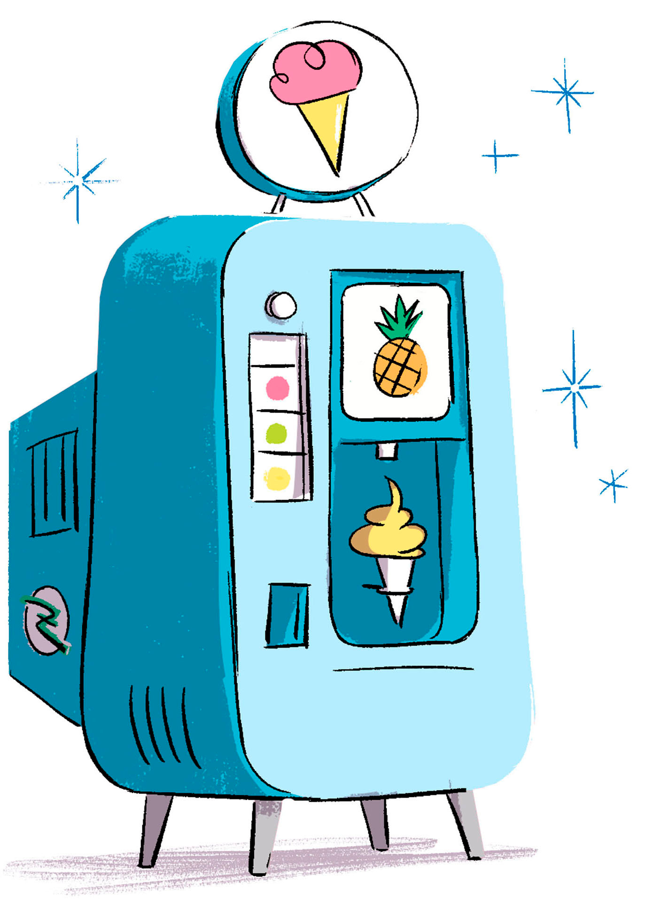
بزرگترها و بچهها عاشق اختراعات زنگِمن بودند. همهٔ بچهها دلشان میخواست یکی از اسکیتبوردهایش را داشته باشند؛ اسکیتبوردی با جدیدترین صداها تا بتوانند توی مدرسه به دوستانشان پُز بدهند. بلندگوی جادوییاش را هم خیلی دوست داشتند؛ بلندگویی که به محض اینکه آهنگی را میگفتی، همان لحظه پخشش میکرد. و البته بستنیهایش… هر بعدازظهر همه دور دستگاههای بستنیساز خودکارش جمع میشدند و از آن بستنیهای فوقالعاده خوشمزه میخوردند. همهچیز انگار جادو بود. اما رازش خیلی ساده بود: کامپیوترهای کوچکی که زنگِمن داخل دستگاههایش گذاشته بود، همهٔ این کارها را ممکن میکرد.
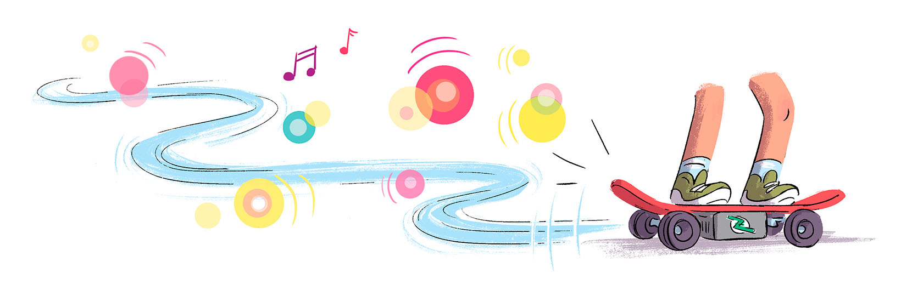
این اختراعات توی مدرسهٔ اِدا حسابی طرفدار پیدا کرده بودند. خیلی از دوستانش با اسکیتبوردهای باحال اینور و آنور میرفتند و کلی پُز میدادند. اما اِدا اغلب دلش میگرفت. مادرش نمیتوانست هیچکدام از آن چیزهای عالی را برایش بخرد: نه اسکیتبورد، نه بلندگو، نه حتی بستنی.
خوشبختانه اِدا درست کنار قراضهفروشی زندگی میکرد. آنجا پر بود از تکههای خراب و قطعات زنگزده. او آنها را با حوصله به هم وصل میکرد و چیزهای تازه و هیجانانگیز میساخت. مثلاً یک ماشین چوبی درست کرده بود که با برادرش آلن سوارش میشدند و با غرش از تپه پایین میرفتند. یک آسیاب بادی هم ساخته بود. و هیولاهای ترسناک اوراقی که با هم با آنها میجنگیدند. گاهی هم وسایل بهدردبخور پیدا میکرد. مثل یک گوشی قدیمی که صفحهاش شکسته بود. اما اِدا بلد بود تعمیرش کند. هرچند توی قراضهفروشی اینترنت نبود، میتوانست جای دیگری به اینترنت وصل شود.
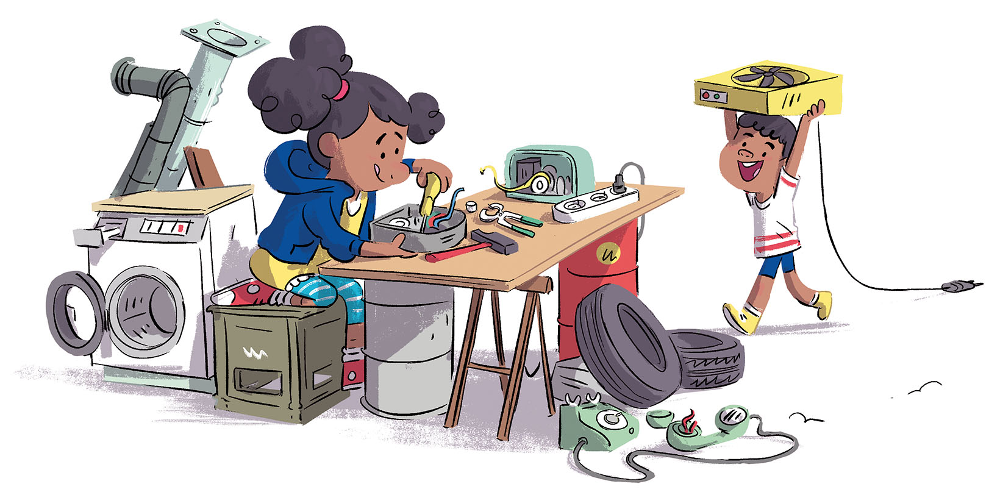
اِدا آنقدر از تعمیر کردن و وررفتن با چیزهای شکسته توی قراضهفروشی لذت میبرد که اسکیتبورد و بستنی را پاک فراموش کرده بود.
چون تقریباً همه اختراعات زنگِمن را میخریدند، خیلی زود ثروتمندترین آدم دنیا شد. با همان پولها یک کامپیوتر طلاییِ بزرگ خرید؛ کامپیوتری با صفحهکلیدی از جواهر. آن را گذاشت توی بزرگترین اتاق عمارتش. از همانجا، بهوسیلهٔ اینترنت، میتوانست همهٔ کامپیوترهای کوچکی را که داخل اختراعاتش کار گذاشته بود، کنترل کند.
تنها کاری که باید میکرد این بود که کلید درست را روی کامپیوتر طلاییاش فشار دهد. همان لحظه، همهٔ دستگاههای بستنیسازی شهر فقط بستنی وانیلی میدادند. اگر دلش میخواست مردم بستنی شکلاتی بخورند، کلید شکلاتی را میزد. اگر هوس بستنی لیمویی میکرد، همهٔ دستگاهها فقط بستنی لیمویی درست میکردند. زنگِمن عاشق اختراعاتش بود و هر بار که میدید دستگاههایش چه خوب و شگفتانگیز کار میکنند، از ذوق بال درمیآورد. گاهی مردم وقتی طعم مورد علاقهشان پیدا نمیشد، کمی دلخور میشدند. اما خب، چه میتوانستند بکنند؟ بالأخره در هر گوشهٔ خیابان بستنی پیدا میشد.
زنگِمن از فشار دادن کلیدهای براق و نگاه کردن به مردم که مشغول خوردن بستنی بودند، خیلی لذت میبرد. هر روز ساعتهای طولانی جلوی کامپیوتر طلاییاش مینشست و این کار را میکرد. بارها و بارها با یک تلسکوپ بلند به شهر نگاه میکرد و میدید که اختراعاتش چقدر دقیق و درست دستورهای او را اجرا میکنند.
وقتی زنگِمن پای کامپیوتر طلاییاش نبود، مشغول این بود که کامپیوترهای کوچکش را داخل وسایل تازهای جاسازی کند و بعد آنها را بفروشد. مثلاً ماشین لباسشویی ساخت که وقتی لباسها شسته میشدند، یک پیام روی گوشی میفرستاد. یا جاروبرقیهایی درست کرد که بهجای سروصدای اعصابخردکن، آهنگهای شاد پخش میکردند. حتی لامپهایی اختراع کرد که با یک بشکن روشن و خاموش میشدند، و ماشینهایی که به آدم میگفتند نزدیکترین فروشگاه مواد غذایی کجاست.
تقریباً توی هر وسیلهای در دنیا، یکی از کامپیوترهای کوچک زنگِمن کار میکرد. اختراعات او در ابتدا شاید ضروری به نظر نمیرسیدند، اما مردم هر چیزی را که میساخت میخریدند. اوضاع همینطور پیش میرفت. همه فقط دستگاههایی را میخواستند که زنگِمن، بزرگترین مخترع جهان، ساخته بود.
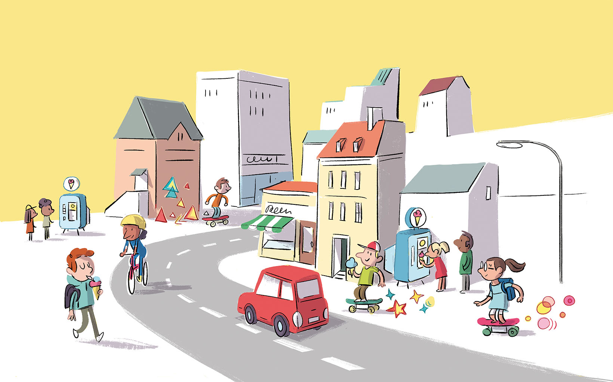
یک روز زنگِمن با خودش گفت: «امروز دلم میخواهد از نزدیک ببینم چه چیزهایی اختراع کردهام.» تلسکوپ بزرگش را کنار گذاشت، از پلههای بلند عمارتش پایین آمد و راهی شهر شد. پر از هیجان بود که بالاخره میتواند از نزدیک با دستگاههای باحال خودش خوش بگذراند.
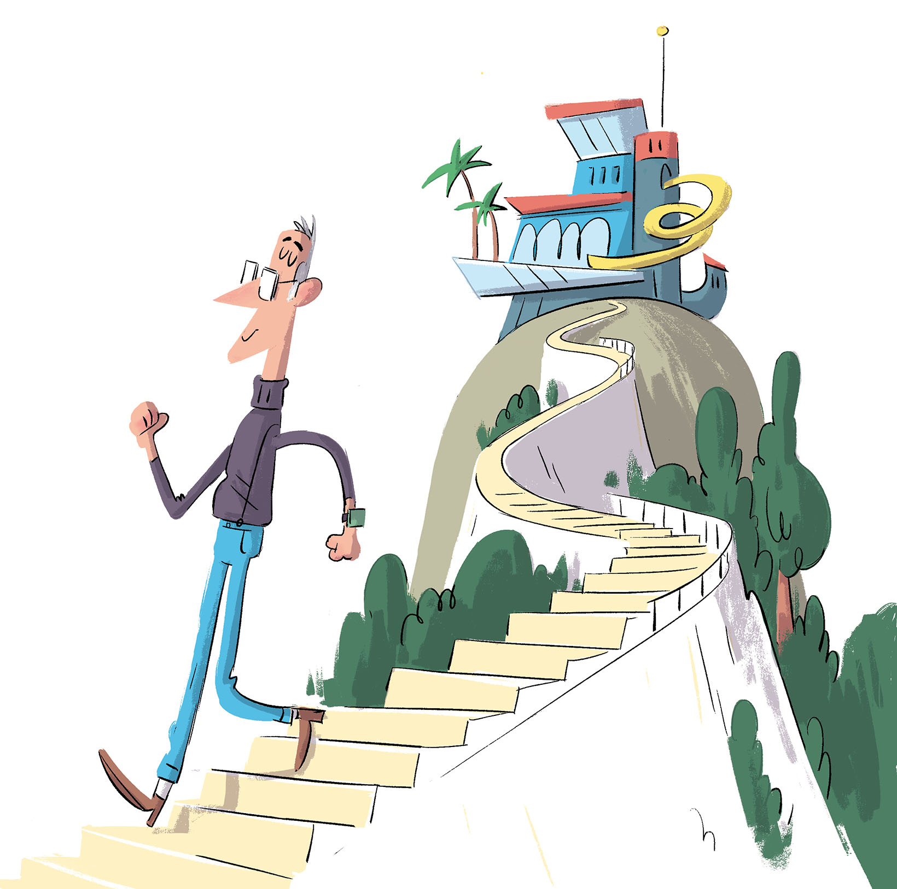
«شاید یک گردش کوچک چند ایدهٔ تازه هم به من بدهد. راستش را بخواهی، اختراعهای آخرم آنقدر به درد نخور نبودند که اولیها بودند...» زنگِمن با خودش فکر میکرد. «ولی دستگاههای بستنیسازم بیرقیب بودند و همیشه هم بیرقیب میمانند!» بلافاصله با غرور در دلش گفت. همان لحظه از کنار گروهی از مردم رد میشد که همگی مشغول خوردن بستنی نارگیلی بودند؛ طعم مخصوص آن روز.
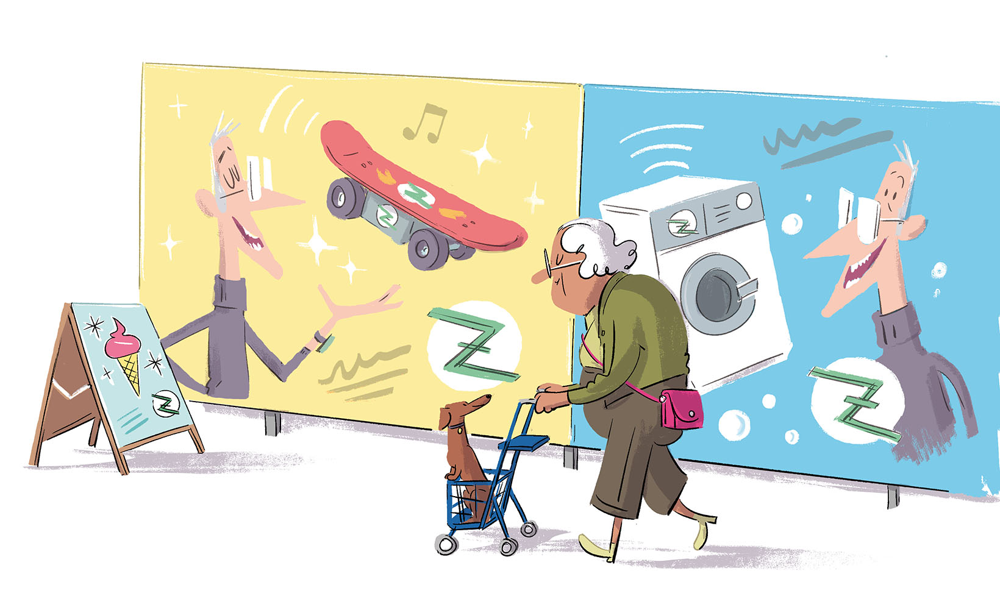
او حسابی توی فکر فرو رفته بود که ناگهان — بمب!!! — چیزی محکم به ساق پایش خورد.
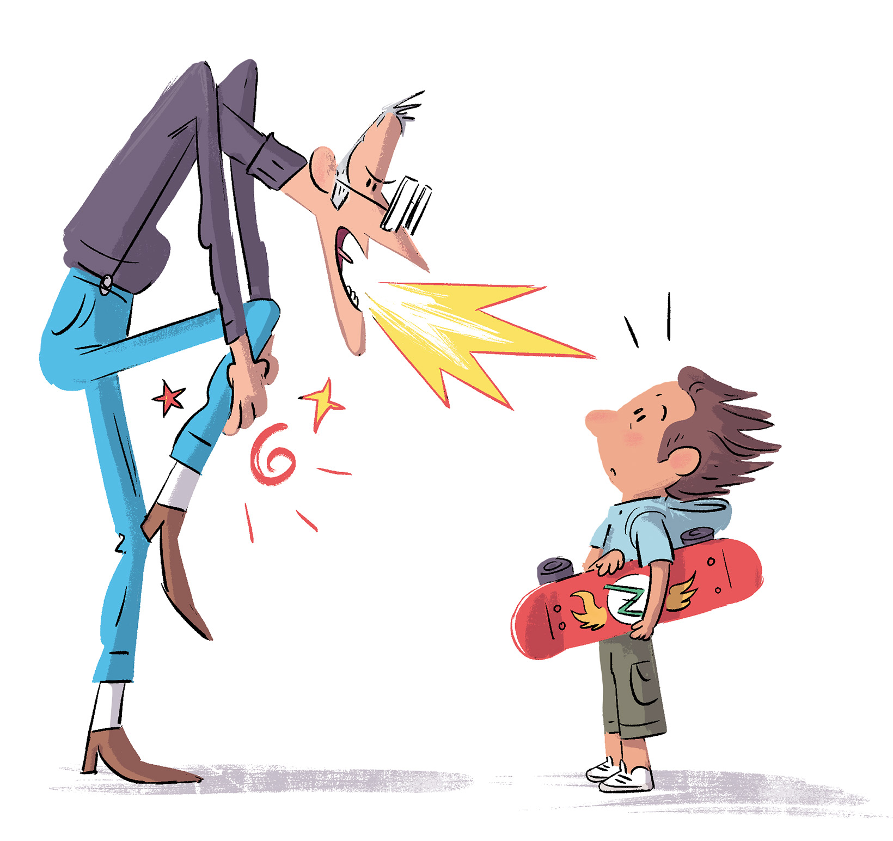
زنگِمن فریادی کشید و به اطراف نگاه کرد تا ببیند چه شده. کودکی هراسان روبهرویش ایستاده بود و یکی از اسکیتبوردهای زنگِمن را زیر بغل داشت. کودک با لکنت گفت: «ببخشید، نمیخواستم این کار را بکنم.» اما زنگِمن اصلاً گوش نمیداد. با عصبانیت و لنگلنگان راهش را کشید و رفت. ناگهان صدای موسیقی خیلی بلندی به گوشش رسید.
هیچوقت چیزی به این وحشتناکی نشنیده بود! به اطراف نگاه کرد و دید صدا از یک بلندگو میآید؛ همان بلندگویی که خودش ساخته بود. آن طرف خیابان کودکی بلندگو را در دست گرفته بود. به نظر میرسید بچه از آن آهنگها خیلی لذت میبرد، اما برای زنگِمن فقط یک سردرد وحشتناک درست کرده بود و حالش را بدتر کرد. اصلاً چنین پیادهرویای را تصور نکرده بود!
زنگِمن از دست آن دو بچه بهشدت عصبانی بود. چطور جرئت کرده بودند از اختراعات او اینطور استفاده کنند؟ آن شب خوابش نمیبرد. پس پشت کامپیوتر طلاییاش نشست. از همانجا به همهٔ کامپیوترهای کوچک داخل اسکیتبوردها دستور داد که دیگر حق ندارند روی پیادهرو حرکت کنند. به کامپیوترهای داخل بلندگوها هم فرمان داد که موسیقی را فقط با صدای آهسته پخش کنند. البته جز موسیقی مورد علاقهاش؛ همان را فوری با صدای بلند روشن کرد تا کمی حالش بهتر شود.
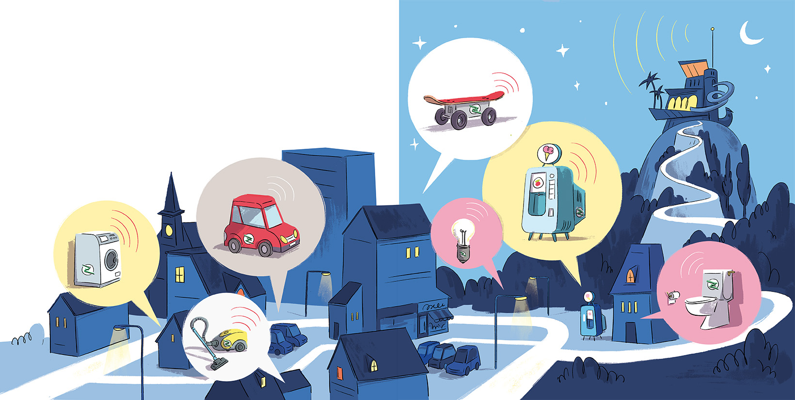
روز بعد، توی مدرسهٔ اِدا هیاهوی عجیبی برپا بود. در راه مدرسه، اسکیتبوردهای بچهها از کار افتاده بودند. چرخها انگار قفل شده بودند و دیگر نمیچرخیدند. بلندگوها هم دیگر صدایشان بالا نمیرفت. یعنی چه خبر شده بود؟
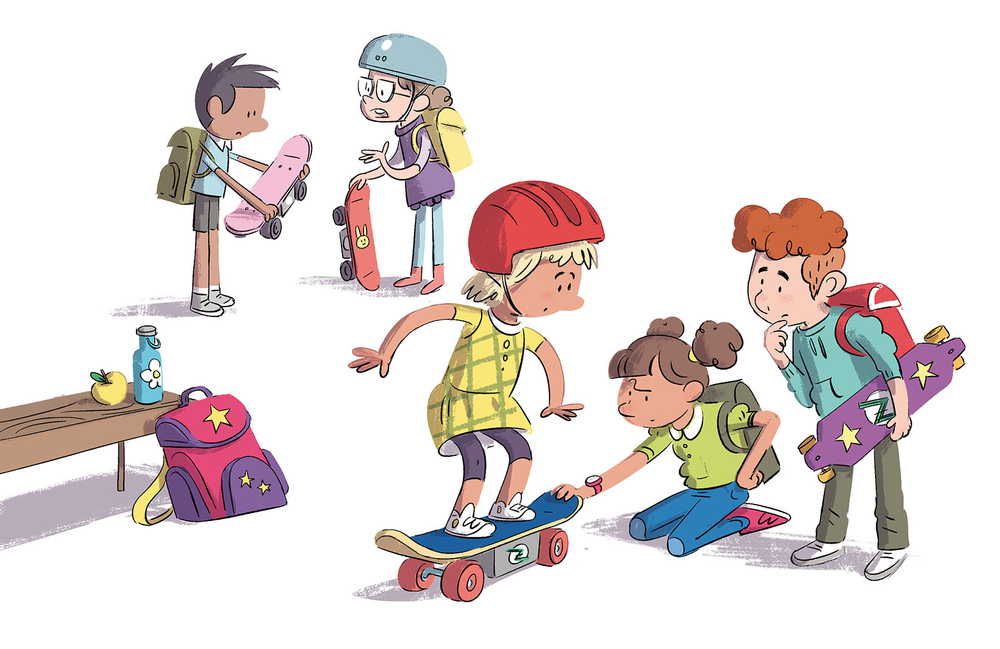
هرچند اِدا خودش هیچکدام از آن وسایل را نداشت، اما تعجب میکرد که چرا اسکیتبوردها و بلندگوها یکدفعه از کار افتادهاند. با این حال وقت زیادی برای فکر کردن به این موضوع نداشت، چون دوباره مشغول وررفتن و تعمیرکاری شده بود. از قطعههای سه تا دوچرخهٔ خراب، یک دوچرخهٔ کامل سرهم کرد. آن را به مادرش هدیه داد تا دیگر مجبور نباشد برای رفتن به سر کار پول بلیط اتوبوس بدهد. برای برادرش هم یک بلندگو ساخت تا عصرها، وقتی مادرشان هنوز سر کار بود، با قصههای قشنگ به خواب برود.
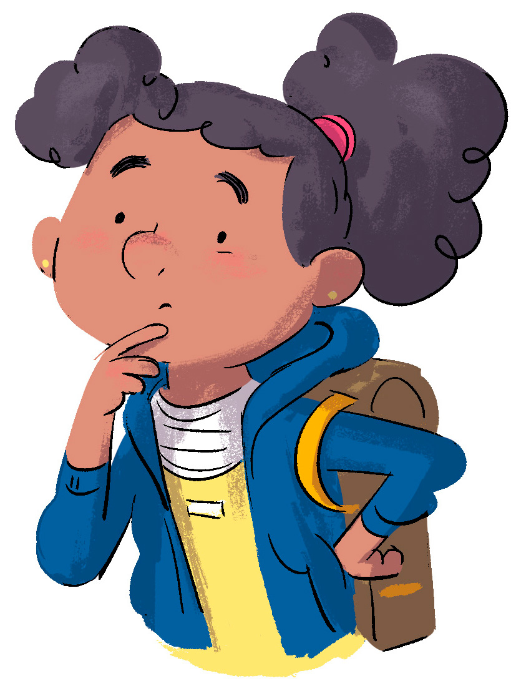
بعد از چند روز، شوک اولیهای که توی مدرسهٔ اِدا پیش آمده بود، فراموش شد. اسکیتبوردها هنوز نمیتوانستند روی پیادهرو بروند، اما به جز این مورد، بقیهٔ کارهایشان را انجام میدادند. حالا بچهها دور زمین بازی چرخ میزدند و به موسیقی ملایمی گوش میدادند. فقط یک موسیقی مارش عجیب و متکبرانه بود که همچنان با همان صدای ثابت پخش میشد و بچهها را کاملاً گیج کرده بود.
اِدا عاشق چهارشنبهها بود. هر چهارشنبه مادرش و آلن میآمدند دنبالش و هر سه با هم به کتابخانه میرفتند. اِدا همیشه جذب بخش فناوری میشد. آنجا پر بود از کتابهایی با طرحهای اولیه، دستورالعمل آزمایشها و توضیحاتی دربارهٔ اینکه دستگاههای مختلف چطور کار میکنند. توی کتابخانه میتوانست با گوشی قدیمیاش به اینترنت وصل شود. خیلی زود فهمید که توی اینترنت هم چیزهای زیادی برای کشف کردن هست. آدمهای زیادی ایدهها و نکات تعمیراتیشان را با دیگران به اشتراک میگذاشتند تا به هم کمک کنند.
در یکی از آن بعدازظهرها، اِدا دو کلمهٔ تازه یاد گرفت: سختافزار و نرمافزار. سختافزار همان چیزی بود که از قبل میشناخت؛ وسایل الکترونیکی که بعد از مدرسه با آنها ورمیرفت، یا چیزهایی که میتوانست در دست بگیرد، تعمیر کند یا به چیز دیگری تبدیلشان کند. اما نرمافزار برایش کاملاً تازه بود. خیلی زود فهمید که نرمافزار یعنی دستورهایی که روی کامپیوتر اجرا میشوند تا بقیهٔ دستگاهها یا کامپیوترها را کنترل کنند. بعضی کتابها به این دستورها میگفتند «برنامه» یا «کد». با چنین برنامهای، مثلاً میشد به یک بلندگو گفت چه آهنگی را پخش کند و صدایش چقدر بلند باشد.
بهترین بخش کشف جدیدش این بود که فهمید نرمافزار را هم میشود مثل سختافزار دستکاری کرد و با آن ور رفت. سختافزار را با ابزارهایی مثل چکش، مته و پیچ میسازند. اما نرمافزار را فقط با نوشتن دستورها، یکی پس از دیگری، برای سختافزار میسازند. برای این کار یک زبان جداگانه وجود داشت: زبان برنامهنویسی. با نرمافزار، اِدا میتوانست اختراعاتش را حتی مفیدتر کند. او واقعاً دلش میخواست زبان برنامهنویسی را یاد بگیرد!
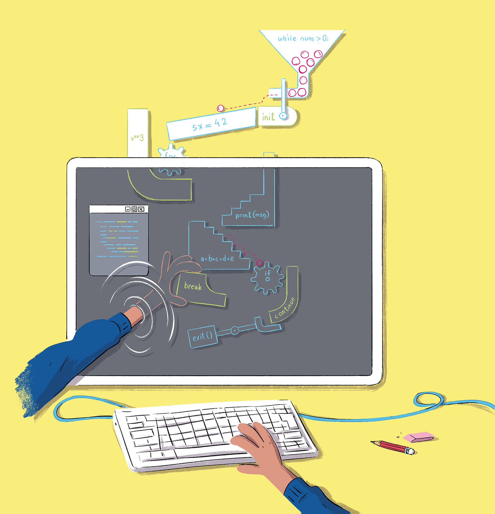
در چند هفتهٔ بعد، اِدا بعدازظهرها را توی کتابخانه میگذراند. کتابها و وبسایتهایی پیدا کرد که توضیح میدادند زبانهای برنامهنویسی و کد چطور کار میکنند. برای او این کار کمی شبیه یادگیری یک زبان مخفی بود؛ یا مثل حفظ کردن کلمههای جدید در مدرسه. اِدا همهٔ اینها را با اشتیاق زیاد یاد میگرفت. اولین برنامهای که میخواست بنویسد، کار سادهای بود: «این لامپ را چشمکزن کن!»
البته دلش میخواست برنامهٔ خودش را همان لحظه امتحان کند تا ببیند واقعاً کار میکند یا نه. توی قراضهفروشی، گوشیاش را به یک لامپ کوچک الایدی وصل کرد. بعد خطوط کد را توی گوشی تایپ کرد.
در ابتدا هیچ اتفاقی نیفتاد. اِدا با خودش فکر کرد خطا از کجا میتواند باشد. چند تغییر کوچک داد و دوباره امتحان کرد و... «بله!» لامپ کوچک شروع به چشمک زدن کرد. روشن، خاموش، روشن، خاموش. اِدا با حیرت به آن نگاه کرد. او اولین برنامهاش را نوشته بود!
اِدا کاملاً هیجانزده بود. تمام کارهای بزرگی را که میتوانست انجام دهد، در ذهنش مجسم میکرد. اگر فقط کد درست را مینوشت، میتوانست اختراعاتش را مجبور کند دقیقاً همان کاری را بکنند که او میخواست. این کار چندان آسان نبود، اما بعد از چند هفته، اِدا یک برنامهٔ واقعاً مفید نوشت: برنامهای که باعث میشد بلندگوی آلن، نیم ساعت بعد از به خواب رفتنش، خودش خاموش شود.
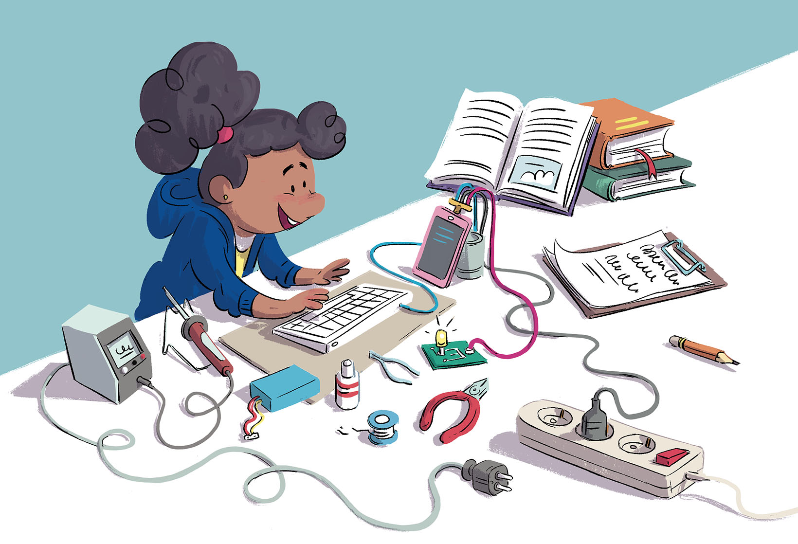
اِدا برای برنامهٔ بعدیاش هم ایدهای در سر داشت. این یکی مهمتر بود؛ یک پروژهٔ واقعی. احتمالاً تمام تعطیلات تابستان را میگرفت... و او بهسختی میتوانست صبر کند!
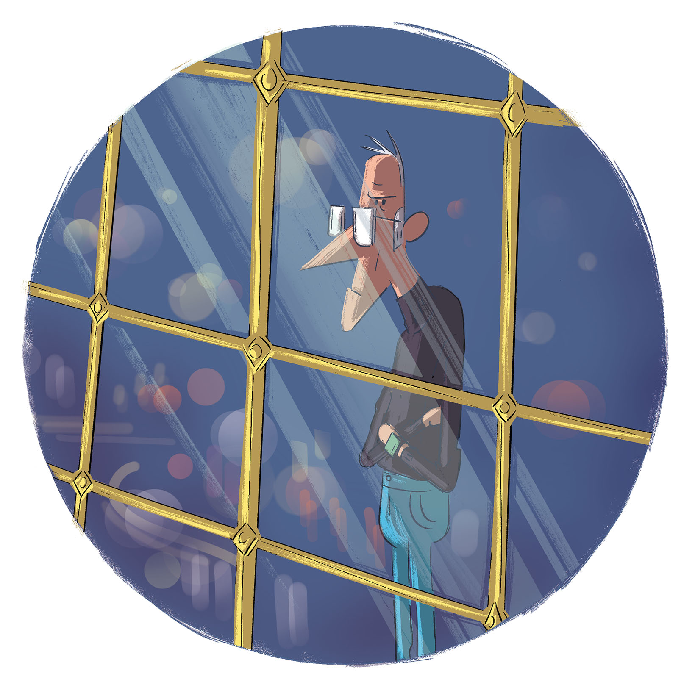
زنگِمن با دستهای ضربدریشده و نگاهی متفکر، از یکی از پنجرههای بزرگ عمارتش به بیرون خیره شده بود. پرتوهای خورشید به داخل میتابیدند و اتاق را روشن کرده بودند.
زنگِمن با خودش فکر کرد و فکر کرد. تمام شب توی رختخوابش غلتید و چرخید و خوابش نبرد. صبح روز بعد با پیشانیای درهمکشیده از خواب بیدار شد و تصمیمی گرفت: باید تغییری ایجاد میکرد. پشت کامپیوتر طلاییاش نشست و پشت سر هم برنامه نوشت. توی این برنامهها دقیقاً مشخص کرد که اختراعهایش چه کاری باید بکنند و تحت هیچ شرایطی چه کاری نباید بکنند. این هرجومرج باید تمام میشد!
وقتی کارش تمام شد، همهٔ برنامههای جدید را از کامپیوتر طلاییاش به دستگاههای مردم فرستاد. به بلندگوها دستور داد که فقط وقتی او نزدیک است، موسیقی مورد علاقهاش را پخش کنند. به دستگاههای بستنیفروشی هم برنامه داد که بعدازظهرها دیگر بستنی نفروشند. بالأخره نمیخواست موقع پیادهروی، لباسهای گرانقیمتش با بستنی لک شود. تمام روز پشت کامپیوتر نشست و تایپ کرد و تایپ کرد و تایپ کرد...
تابستان تقریباً نصف شده بود. اِدا جلو پروژهٔ بزرگش ایستاده بود و سرش را میخاراند. از قطعههای قدیمی یک اسکیتبورد ساخته و یک موتور به آن وصل کرده بود تا چرخها بچرخند. با یک اسکیتبورد موتوری میتوانست بعد از مدرسه خیلی سریعتر به کتابخانه یا قراضهفروشی برود. فوقالعاده کاربردی! اما کار نمیکرد. وقتی روی آن میایستاد و دکمهٔ «برو!» را میزد، چرخها حرکت میکردند، ولی خیلی تند. هر بار که شروع میکرد، از روی اسکیتبورد میافتاد. هر کاری میکرد، نمیتوانست درستش کند.
بعد از اینکه برای صدمین بار پشتش به زمین خورد، دوباره به کتابخانه برگشت. همیشه جواب سؤالهایش را آنجا پیدا میکرد. و واقعاً هم پیدا کرد. توی اینترنت به برنامهای برخورد که کسی برای یک اسکوتر برقی نوشته بود؛ اسکوتری که آن هم لازم بود آرام شروع به حرکت کند.
اِدا آن برنامه را روی گوشیاش دانلود کرد. برگشت به قراضهفروشی و چند خط از کد را برای برنامهٔ اسکیتبوردش تغییر داد. چیزهایی را تنظیم کرد و به تعمیر و اصلاح ادامه داد. سرانجام، بعد از چند بار تلاش ناموفق، در آخرین روز تعطیلات تابستان، لحظهٔ موعود رسید. اِدا روی اسکیتبورد ایستاد و دکمهٔ «برو!» را فشار داد. اسکیتبورد شروع به حرکت کرد؛ اول آهسته، بعد تندتر. کار میکرد! امتحان کرد ترمز کند. موفق شد! اِدا از خوشحالی فریاد کشید و راهی پارک شد.
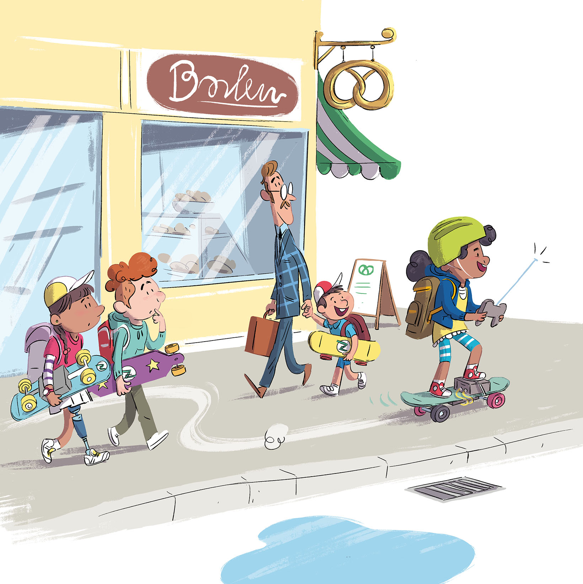
وقتی اِدا در اولین روز بعد از تعطیلات تابستان با اسکیتبوردش به مدرسه رفت، بقیهٔ بچهها مات و مبهوت شدند. سر زنگ تفریح، همکلاسیهای کنجکاو دورش را گرفتند و پرسیدند: «چطور میتوانی با اسکیتبورد روی پیادهرو حرکت کنی؟»
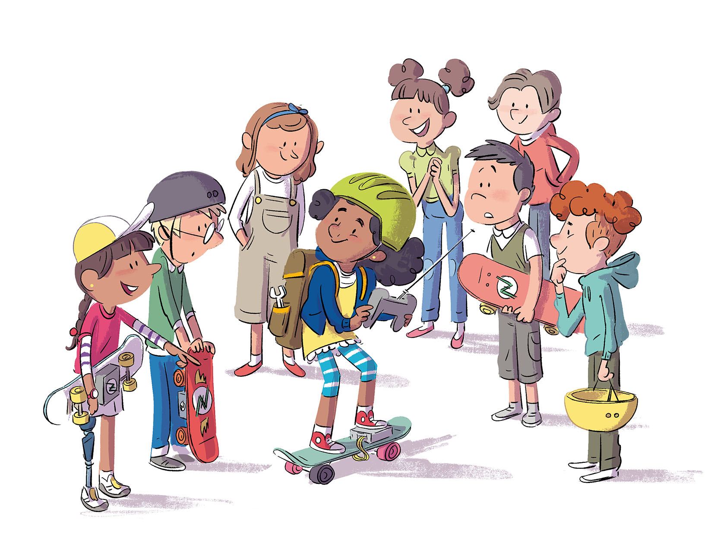
اِدا لحظهای فکر کرد و بعد گفت: «فکر نمیکنم مشکل از خود اسکیتبوردهای شما باشد. احتمالاً مشکل از نرمافزاری است که داخلشان کار گذاشتهاند. به احتمال زیاد توی برنامهشان نوشتهاند که حق ندارند روی پیادهرو حرکت کنند. اما میشود تغییرش داد!»
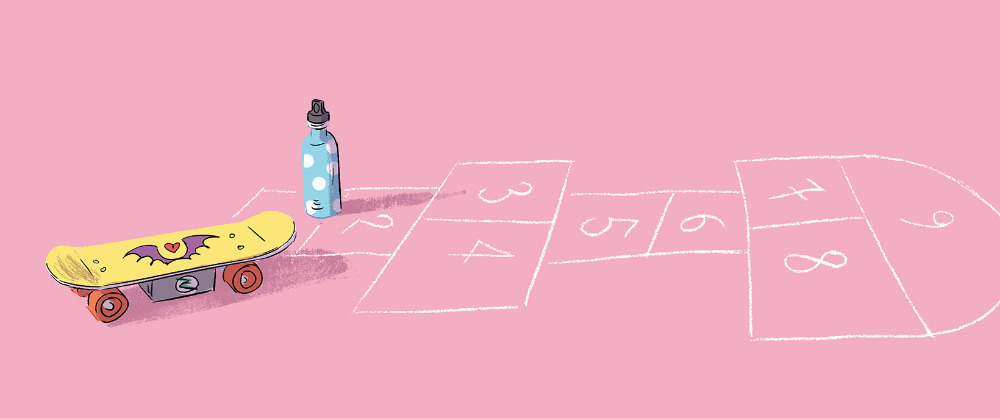
آن عصر، اِدا نظریهاش را روی اسکیتبورد همکلاسیاش تونی امتحان کرد. تقریباً تمام شب را مخفیانه کار کرد و فردا تونی توانست دوباره روی پیادهرو اسکیتسواری کند. متأسفانه اسکیتبوردش دیگر نمیتوانست آن صداهایی را که پدر و مادرش از زنگِمن خریده بودند، دربیاورد. بهجایش، هر ده دقیقه یکبار یک صدای عجیب و طولانی مثل آروغ از خودش درمیآورد. اِدا میدانست که چنین خطاهای کوچکی ممکن است همیشه توی برنامهها پیش بیاید. اما اسکیتبورد تونی که حالا مثل آدم آروغ میزد، واقعاً خندهدار بود!
هر روز تعداد بیشتری از بچهها بعد از مدرسه به دیدن اِدا توی قراضهفروشی میآمدند. او به آنها کمک میکرد برنامههای اسکیتبوردهایشان را بازنویسی کنند. بعضی از همکلاسیهایش از این کشف تازه خیلی هیجانزده شده بودند. با کد نرمافزار میشد کارهای باورنکردنی انجام داد! دلشان میخواست هر چیزی را که اِدا دربارهٔ زبانهای برنامهنویسی میداند، یاد بگیرند. و خیلی زود دوباره توانستند هر جا که میخواهند اسکیتسواری کنند.
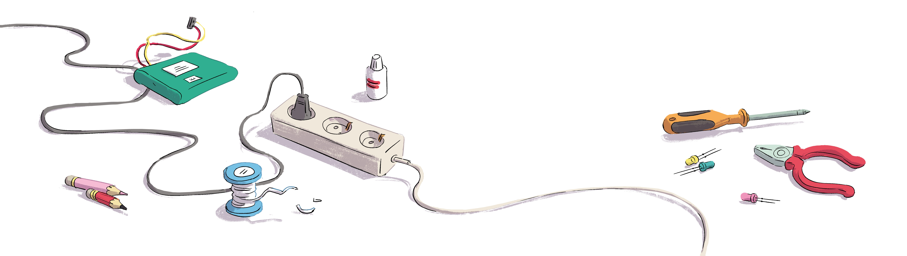
اما ماجرا فقط به همینجا ختم نمیشد. با آن نرمافزار میتوانستند قابلیتهای جدید و باحالی به اسکیتبوردهایشان اضافه کنند. ماری لامپهای الایدی رنگارنگی به اسکیتبوردش وصل کرد که بسته به سرعت، نورهای مختلفی میدادند. کنراد هم برای اینکه سریعتر شود، پرههای قدیمیاش را به اسکیتبوردش وصل کرد.
اِدا، تونی، ماری و کنراد بعدازظهرهای زیادی را توی قراضهفروشی میگذراندند. حتی یک کارگاه درست کرده بودند که آنجا ساعتها برنامههایشان را بهتر میکردند، در حالی که با همان بلندگویی که اِدا برای آلن ساخته بود، به آهنگ گوش میدادند.
تونی که مشغول نصب یک سرعتسنج روی کلاهش بود، گفت: «بلندگوی برادرت خیلی از مال ما بلندتره.» ماری جواب داد: «مطمئنم این هم به خاطر نرمافزارشه.»
با هم نرمافزار بلندگوها را هم تغییر دادند. بعد موسیقی را تا آخر بلند کردند و مثل دیوانهها با هم رقصیدند.
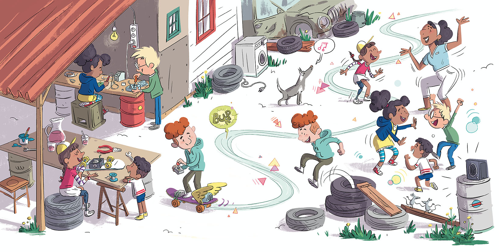
هر روز اِدا و دوستانش برای بعدازظهرشان با هم برنامهریزی میکردند. از یک دستگاه بستنیسازی خراب، یک دستگاه تازه ساختند که میتوانست بستنی را به هر شکل و رنگی که فکرش را بکنی دربیاورد. بستنی مربعی خوردند، بستنی قلبی، حتی بستنی هرمی. بستنی توتفرنگی، تمشک و رنگینکمانی، همهشان را با پودر رنگی و سس فندق. خیلی بهتر از دستگاههای زنگِمن.
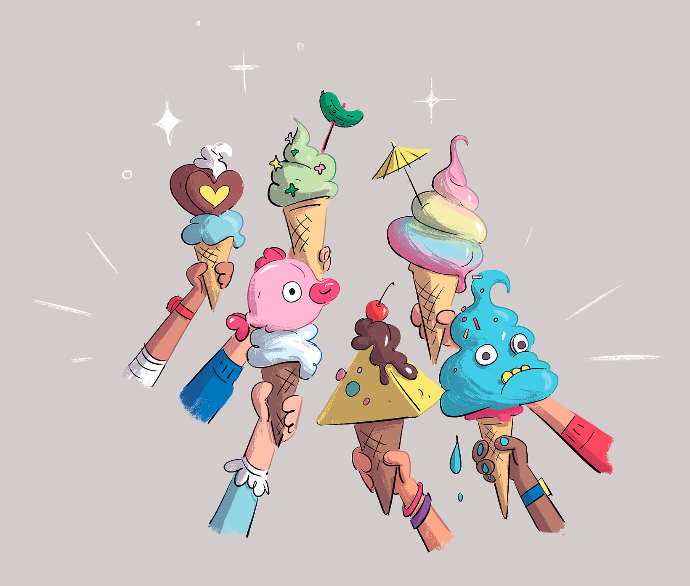
گاهی حتی میتوانستند به بزرگترها هم کمک کنند. تونی ماشین اتوی پدرش را دوباره برنامهریزی کرد تا بتواند کراواتها را هم اتو کند. زنگِمن این کار را برای دستگاهها ممنوع کرده بود، چون از کراوات مثل طاعون متنفر بود. برای رانندهٔ اتوبوس، از شلنگهای قدیمی و یک کامپیوتر، سیستم آبیاری خودکاری ساختند تا گیاهانش توی روزهای گرم تابستان از تشنگی خشک نشوند. و به سرایدار مدرسه کمک کردند جاروبرقیاش را طوری عوض کند که اسباببازیها را تشخیص بدهد و آنها را توی خودش نکشد.
بعضی چیزها را فقط برای سرگرمی میساختند. مثل یک دستگاه بادِ شکم که روی صندلی معلم ریاضیشان نصب کردند. هر بار که خانم گرنت روی صندلی مینشست، دستگاه یک صدای بادِ شکم کوچک پخش میکرد. معلم دعوایشان میکرد، اما اِدا مطمئن بود که هر بار توی دلش کمی لبخند میزند.
یک روز زنگِمن متوجه شد که بعضی از کامپیوترها دیگر از دستورهای برنامهنویسیاش پیروی نمیکنند. شوکه و از شدت خشم برآشفته، به رئیسجمهور تلفن کرد. با صدایی لرزان فریاد زد: «یک نفر دارد برنامههای دستگاههای مرا بازنویسی میکند! این نباید اتفاق بیفتد! اینها اختراعهای من هستند! اگر هر کسی بتواند با کامپیوترها هر کاری که دلش میخواهد بکند، خیلی خطرناک میشود. شما باید قانونی علیه این کار تصویب کنید!»
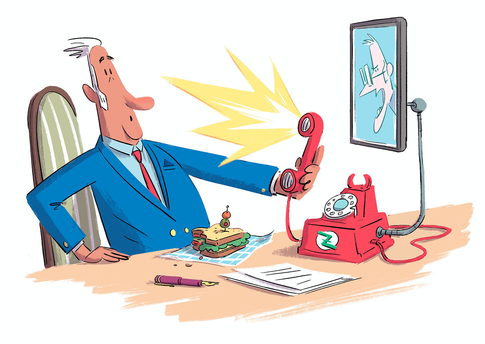
رئیسجمهور نمیخواست زنگِمن را ناراحت کند. همهٔ کامپیوترهای دولت توسط زنگِمن برنامهنویسی شده بودند. بدون آن کامپیوترها، دولت نمیتوانست کشور را اداره کند. پس به درخواست زنگِمن این قانون را تصویب کرد:
«همهٔ کامپیوترهایی که به دستورهای زنگِمن گوش ندهند، از کار میافتند. هر کسی که برنامهٔ دستگاههای زنگِمن را بازنویسی کند، باید ۵۰۰ هزار سکهٔ طلا جریمه بپردازد!»
وقتی اِدا و دوستانش این را شنیدند، خیلی عصبانی شدند. گفتند: «این ظالمانهست! ما خودمان اسکیتبوردهایمان را دوباره ساخته و برنامهریزی کردهایم. حالا خیلی بهتر از قبل کار میکنند. نمیگذاریم کسی این را از ما بگیرد!»
جلوی یکی از دستگاههای بستنیسازی که خودشان دوباره ساخته بودند، جمع شدند و شروع کردند به حرف زدن دربارهٔ وضعیت. واضح بود که باید در مورد این قانون جدید کاری میکردند. پس نقشهای کشیدند...
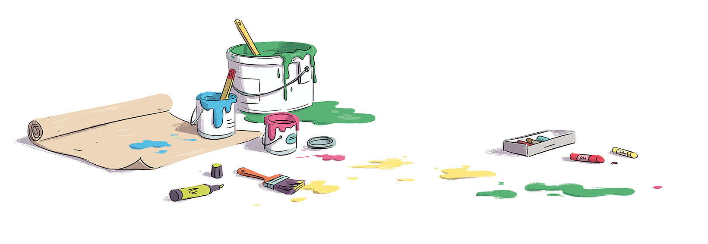
روز بعد به مدرسه نرفتند. بهجایش، تابلوهای بزرگ اعتراضی زیر بغل گرفتند و با اسکیتبوردهایشان راهی ساختمان پارلمان شدند. آنجا، روبهروی ساختمان نشستند. شب قبل روی بعضی از تابلوها لامپهای الایدی نصب کرده بودند که حالا روشن و چشمکزن بودند. بلندگوهایشان را هم به هم وصل کرده بودند تا صدایشان توی خیابان خوب شنیده شود. بعضی از رهگذران ایستادند و پرسیدند برای چه چیزی تظاهرات میکنند. بچهها با هم جواب دادند: «برای آزادی نرمافزار!» و داستانشان را برای بزرگترها تعریف کردند. بزرگترها با تأثر سر تکان دادند. حتی رئیسجمهور هم وقتی به ساختمان نزدیک میشد، با کنجکاوی به تابلوهایشان نگاه کرد.
روز بعد، اِدا و دوستانش دوباره روبهروی ساختمان پارلمان جمع شدند. این بار تنها نبودند. چند نفر از همکلاسیهایی که اسکیتبوردهایشان را اِدا دوباره برنامهریزی کرده بود، به آنها پیوستند. پدر تونی و چند تا از والدین و بزرگترهای دیگر هم آمده بودند تا از اعتراض حمایت کنند. آنها دستگاههایی را که بچهها ساخته بودند خیلی مفید میدانستند.
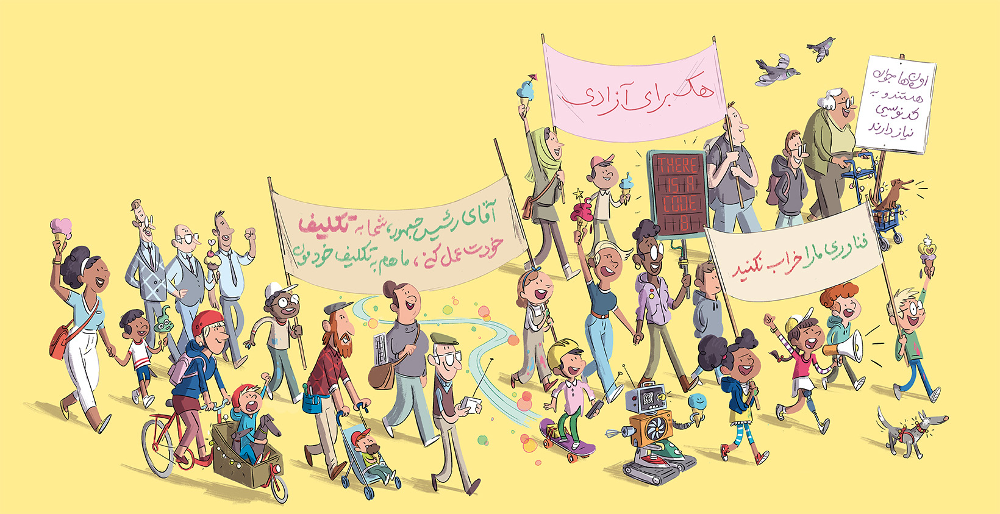
روزبهروز تعداد کودکان و بزرگترهایی که به اعتراض میپیوستند بیشتر میشد. رانندهٔ اتوبوسی که قبلاً به او کمک کرده بودند، با اتوبوسش آمد و با بوقهای پشتسرهم، توجه آدمهای بیشتری را جلب کرد. سرایدار مدرسه چند تا از دوستانش را با خودش آورد. پدر تونی هم همکارانش را از محل کارش آورده بود؛ همهشان با کراواتهای کاملاً اتوکشیده آمده بودند. حتی خانم گرنت هم به جمع پیوست. این جنبش روزبهروز بزرگتر شد. بعد از چند هفته، نه فقط توی شهر اِدا، بلکه توی خیلی از شهرهای کشور تظاهرات برگزار میشد.
اِدا هر هفته، حتی در باران شدید، روبهروی ساختمان پارلمان اعتراض میکرد. یک روز بارانی، وقتی رئیسجمهور از کنار گروه بچههای خیسخورده رد میشد، نتوانست تحسینش را از سرسختی آنها پنهان کند. از اِدا پرسید: «چرا هر روز اینجا نشستهاید؟ میخواهید به چه چیزی برسید؟» اِدا جواب داد: «ما میخواهیم خودمان تعیین کنیم که با کامپیوترهایمان چه کاری میتوانیم بکنیم و چه کاری نمیتوانیم.» دوستانش با هم شعار دادند: «فناوریمان را خراب نکنید! فناوریمان را خراب نکنید!» و «کد را میخواهیم! کد را میخواهیم!»
رئیسجمهور به چهرههای مصمم بچهها نگاه کرد. راستش را بخواهید، او هم دلش میخواست خودش تصمیم بگیرد که دولت با کامپیوترهایش چه کاری میتواند بکند و چه کاری نمیتواند. اما از کامپیوتر و کد چیزی سر درنمیآورد، برای همین همیشه این کار را به زنگِمن سپرده بود. غرق در فکر، وارد ساختمان شد.
روز بعد، رئیسجمهور اِدا و دوستانش را دعوت کرد. به آنها گفت: «ما هم میخواهیم خودمان مسئول نرمافزارهایمان باشیم. برای اینکه این اتفاق بیفتد، دولت باید از زنگِمن مستقل شود. میتوانید به من بگویید دربارهٔ برنامههای کامپیوتری چه میدانید؟» بچهها با اشتیاق توضیح دادند که نرمافزار چطور کار میکند و چه کارهایی میشود با آن کرد. رئیسجمهور شگفتزده شد.
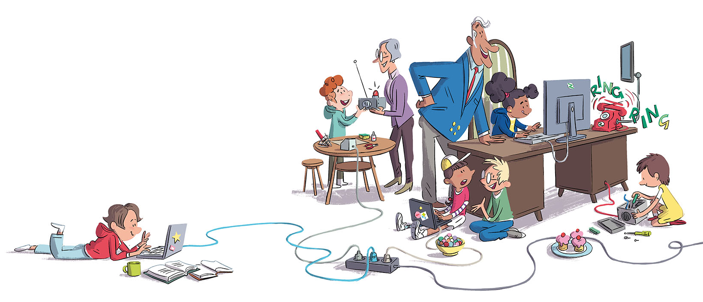
با این دانش تازه، دولت میتوانست نرمافزارهای خودش را همانطور که میخواهد طراحی کند؛ کاملاً مستقل از زنگِمن. رئیسجمهور فوری با مشاورانش جلسه گذاشت. با هم، و در جمع بزرگی همراه با بچهها، شروع کردند به حرف زدن دربارهٔ همهچیزهایی که میشود توی نرمافزار تغییر داد و بهتر کرد. آن شب بچهها با غرور و رضایت به خانه رفتند. بالأخره اتفاقی افتاده بود! اعتراض طولانیشان ارزشش را داشت.
صبح روز بعد، تلفن رئیسجمهور خیلی زود به صدا درآمد. زنگِمن بود. عصبانیتر از همیشه. تهدید کرد: «بدون من، کامپیوترهای دولت دیگر کار نخواهند کرد!» اما رئیسجمهور با خونسردی جوابش را داد و سریع گوشی را قطع کرد. آن روز تلفن چند بار دیگر هم زنگ خورد، اما تماسهای زنگِمن بیپاسخ ماند. رئیسجمهور در جلسهای با اِدا، تونی، ماری، کنراد و متخصصان دولت نشسته بود.
در روزهای بعد، از صبح تا شب با هم حرف زدند و اولین برنامههای کامپیوترهای دولت را طراحی کردند. دیگر مزاحمت تماسهای زنگِمن را نداشتند. تونی ایدهٔ خوبی داد: «بیایید تلفنها را دوباره برنامهریزی کنیم. وقتی زنگِمن زنگ میزند، فقط این پیام خودکار را بشنود: «دولت فقط از نرمافزاری استفاده میکند که بتواند آزادانه از آن استفاده کند، مطالعهاش کند، به اشتراکش بگذارد و بهبودش بدهد. از تماس شما متشکریم.»»
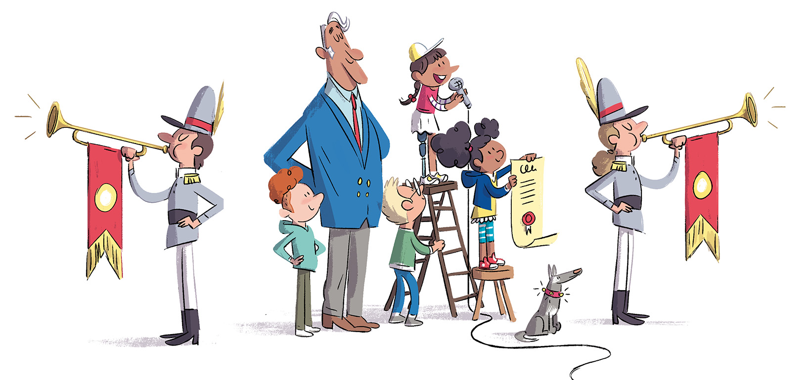
بعد از هفتهها اعتراض و گفتوگو، بالاخره زمانش رسید: قانون قدیمی زنگِمن لغو شد! بهجایش، دولت این قانون جدید را اعلام کرد: «همه مجازند کامپیوترهای خود را برنامهنویسی کنند، به شرطی که قوانین دیگر را رعایت کنند.» علاوه بر این، یک درس جدید هم به مدارس اضافه شد: سختافزار و نرمافزار کامپیوتر.
آن عصر همه با یک جشن بزرگ جشن گرفتند. اِدا، آلن، تونی، ماری، کنراد و بقیهٔ بچههای مدرسه همراه والدینشان؛ رئیسجمهور؛ خانم گرنت؛ رانندهٔ اتوبوس؛ سرایدار... همه آنجا بودند. خیابانها را تزئین کردند، به موسیقی بلند گوش دادند و به هر اندازه که دلشان میخواست بستنی خوردند؛ با هر شکل و رنگی که فکرش را بکنی.
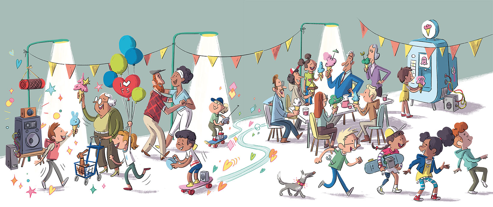
زنگِمن؟ هیچکس از او خبری ندارد. شاید هنوز هم عصبانی پشت کامپیوتر طلاییاش نشسته باشد. شاید دیگر جرئت نکند به خیابان بیاید و همهٔ پنجرههای عمارتش را با تخته پوشانده باشد تا مجبور نباشد نگران کارهایی باشد که دیگران با اختراعاتش میکنند.
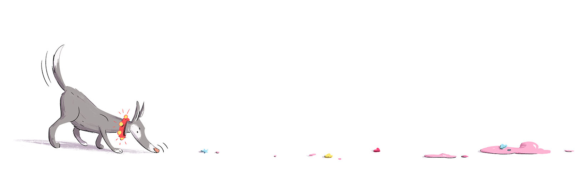
اما شاید هم گاهی از پشت دوربین بلندش به دنیای بیرون نگاه کند و ببیند بچهها هر روز چه چیزهای تازهای اختراع میکنند. شاید آن وقت یادش بیاید که خودش چقدر از تعمیر کردن و آزمایش کردن لذت میبرد. و شاید، فقط شاید، یک بستنی تمشکیِ هرمی با پودر رنگینکمانی بخورد.
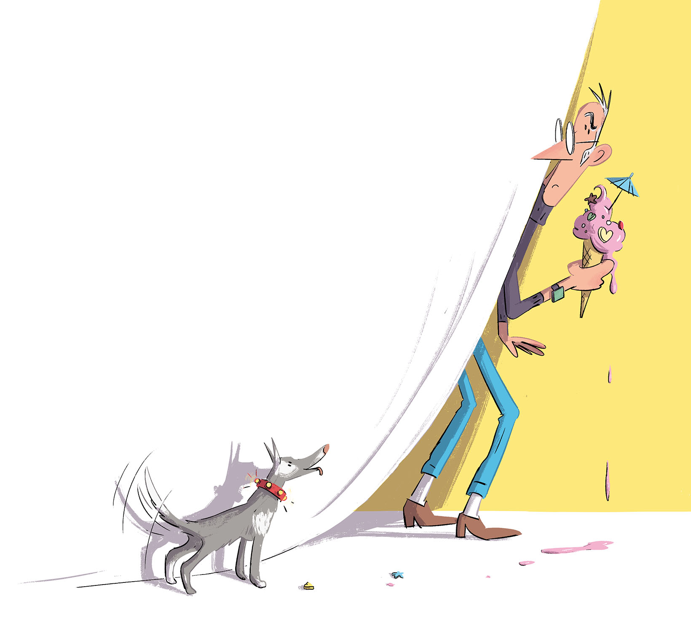